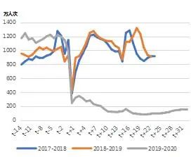
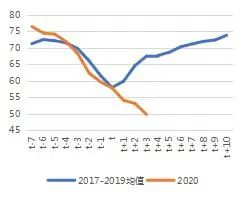
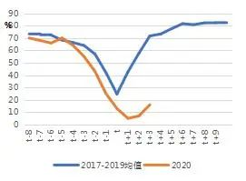
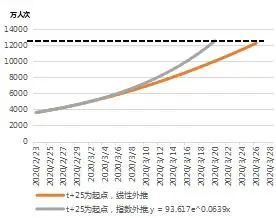

武汉监所一日新增232例 累计确诊806例
原文链接 备份链接 【财新网】（记者 覃建行）2月29日，武汉市各监所新增新冠肺炎确诊病例232人，包括监狱231人、看守所1人。 据央视新闻报道，截至当日武汉市监所在押人员已有806人确诊新型肺炎，全市累计感染确诊27700人。 财新记 …

企业的复产之路充满不确定性。接下来会如何演化，既取决于企业的自救措施，更取决于政府能否为复产提供一个相对友好的宏观环境。最关键的是财政政策要更加积极

何帆 朱鹤 | 文
当前，新冠疫情正在以一种我们从未见过的方式影响着中国和世界经济。新冠病毒感染性强、潜伏期长、且正在逐渐扩散到世界各国。新冠疫情与我们以往见过的所有外部冲击都不同。它既不像2008年因外需突然萎缩带来的需求冲击，也不像20世纪70年代石油危机或者2011年日本大地震带来的供给冲击，甚至也不能完全以2003年的SARS疫情为参照。用现有的宏观模型分析新冠疫情对宏观经济的影响，无异于刻舟求剑。
本文试图在已有数据的基础估算新冠疫情可能对中国宏观经济带来的影响。本文仅侧重新冠病毒影响中国经济的最直接机制：即因防控疫情导致绝大多数企业处于停产或半停产状态。企业何时能够全面复产，回到正常的生产状态，决定了疫情对经济的影响量级。
新冠疫情对各个产业带来的冲击也不一样。比如，餐饮、旅游、交通运输等行业受到疫情的冲击更大，而制造业受到的冲击相对较小，网购、网游等行业反而在疫情中逆势上扬。制造业是中国经济的基石，而制造业中细分行业较多。本文试图提出一个初步的分析框架，探讨制造业各行业受到疫情影响大小。
假设疫情会出现进一步的变化，则中国和全球经济受到的影响势必会更加复杂，我们也将跟踪局势的变化，做出更详细的探讨。
一、 中国经济什么时候能恢复正常？
我们先讨论企业何时能够全面复产。这里所说的全面复产，指的是企业从当前的极端状态下恢复到正常的生产秩序，主要体现为三个方面，分别是员工人数、产能利用率和现金流水平。这三个方面的逻辑关系是：恢复生产秩序的先决条件是人员到岗，中端验证是产能利用率等指标恢复到正常水平，最终确认是下游需求回暖以及企业现金流恢复正常。
从能够获得的高频数据可以看出，企业复产的进度并不乐观。
首先，我们利用全国铁路每日客运量来跟踪人员到岗的情况。如图1所示，从2月10日明确开启复工至今，客运量的恢复速度依然较慢。2月19日至今，每日客运量环比有明显增加，但与正常状态下每天800-900万人次的客运量水平仍有显著差异。我们也可以用五大发电集团的日均耗煤量来跟踪企业实际的生产情况（业界普遍采用六大发电集团的日均耗煤量，我们这里剔除了国电的耗煤数据，主要是因为该数据自2月7日至今，日均耗煤量均为12.79万吨，没有任何波动。这既与其自身的历年变化规律有差异，也与其他五大发电集团在近期的数据表现有差异）。如图2所示，当前发电集团的耗煤量只有同期的50%左右。
图1 全国铁路每日客运量与过去两年对比

数据来源：交通运输部，wind，经作者自行整理。t为春节当天。
图2 五大发电集团日均耗煤量与过去三年均值对比

数据来源：交通运输部，wind，经作者自行整理。t为春节当天。
此外，我们还可以用部分行业数据直接观察当下的生产状态：（1）全国主要钢厂的开工率低于过去三年同期水平10%，且仍在下跌（图3和图4）；（2）化工行业中，江浙地区涤纶长丝的开工率也低于过去三年同期水平20%左右，目前没有回升迹象（图5）；（3）纺织行业中，涤纶长丝对应的下游织机低于历年同期水平50%以上，2月6日当周只有5%的开工率，目前虽有复苏迹象，但进度比较缓慢（图6）。
图3 主要钢厂开工率：线材

数据来源：wind，经作者整理。t为春节当周。
图4 主要钢厂开工率：螺纹钢

数据来源：wind，经作者整理。t为春节当周。
图5 江浙地区涤纶长丝开工率

数据来源：wind，经作者整理。t为春节当周。
图6 江浙地区涤纶长丝下游织机开工率

数据来源：wind，经作者整理。t为春节当周。
综上，无论是从人员到岗还是从生产状态来看，企业复产进度并不乐观。全国铁路每日客运量和五大发电集团日均耗煤量等高频宏观数据表明，当下的复产仍在初期阶段，进展缓慢。
那么，企业到什么时候才能全面复产呢？
人员返岗是全面复产的必要条件，对人员返流情况的评估是判断复产时间的重要依据。我们分别从存量和流量两个方面估算人员返流需要的时间。流量方面，我们用过去三年春节前后的客流量作为基准，来判断正常状态下的铁路运力水平。存量方面，我们用2018-2020三年里，春节前15天全国铁路客运总量作为基准。根据过往经验，每年初五都是返程高峰期的开始，大致会持续到正月十六，这期间的返程客流量应该等于春运之前的返乡客流量。如表所示，过去两年春运前14天和初五到正月十六的客流存量数据基本一致。而2020年节前返乡累计人次高达16亿人次，显著高于过去两年，但节后同期的返程累计人次仅为2131.9万人次。
表1 2018-2020春节前后客运存量数据对比

数据来源：交通运输部，经作者整理。
本轮复工始于2月10日，从2月19日起铁路客运量客回升速度较快。因此，我们以2月19日为起点，利用2月19日-2月26日的数据为基准，分别用线性外推和指数外推的方法，判断客运量恢复到正常状态所需要的时间，以及累计客运量达到节前存量水平所需要的时间，结果见图7（虚线位置为900万人次左右的客运量，衡量我国铁路运力的常态水平）和图8（虚线位置为1.22亿人次的累计客运量，是节前累计客运量1.62亿人次的75%。乘以75%的原因是春运中民工和学生的比重大概是3:1）。如图所示，即使按照指数增长，两者大致都要到3月20左右才能做到人员返流。根据现有的政策，外地返城人员需要自行在家隔离一段时间，不同地区执行的标准略有差异，从7天到14天不等。如果我们假定中位数是10天，那么最终人员返流的时间至少要到3月底。
图7 全国铁路客运流量数据外推

数据来源：交通运输部，经作者整理和计算。
图8 初五至今全国铁路客运村联跟数据外推

数据来源：交通运输部，经作者整理和计算。
接下来，我们利用历史数据来评估企业恢复正常生产状态所需要的时间。首先，我们把复产所需要的时间分成三个部分，分别是停工时间、正常复产周期和延时系数。
停工时间是指本次产能利用率和开工数据的最低点与历史最低点之间的时滞，也就是2020年数据录得最低值的日期与过去三年同期内低点的时间差。正常情况下，春节当天或者当周就是最低点，而此次由于防控的需要，许多企业在节后一段时间内无法开工，导致低点被迫推后。目前，部分数据已经录得区间的最低值，如五大发电集团耗煤量和织机的开工率，但如螺纹钢开工率、线材开工率等还没有录得最低值，这意味着停工时间可能会有低估。
正常复产周期是指过去三年内，相关指标从最低点回到节前正常水平所需要的天数。周度数据按照每周7天统一换算成了天数。
延时系数是指由于防控措施和供应链协调等因素，本轮企业复产的节奏会比正常的复产周期要长，因此需要乘以一个系数。我们假定本轮复产会比过去多用一倍的时间，即延时系数为2。对于已经见底的指标，如果用先行外推的方法测算回升速度，并不支持延时系数为2的设定，实际上可能会更大一些。因此，延时系数为2实际上是一个乐观估计。
综上可得，复产时间=停工时间+正常复产周期*延时系数。结果如表2所示，单位为天。如表所示，根据我们测算的结果，表中的高频数据要恢复到历史的正常状态至少要两个月的时间，对应的复产时间是3月底。
表2 根据历年经验推算复产时间

数据来源：wind，经作者整理和计算。
所有上述分析都依赖于各种假设，但也没有考虑实际复产中会遇到的各类困难。而这些实际的困难或许会进一步增加复产的难度，延长复产的时间。
第一，尽快恢复生产秩序与防止疫情二次扩散的两难会越来越明显。当前的防控压力依然很大，许多劳务输出省份的基层政府和社区依然采用一刀切的方式防控疫情，省内和市内的基层交通也没有加速放开的迹象。这些都大大限制了人员返程的速度。而劳务输入省份中，有些地区的外输病例并没有减少，反而在不断增加，这进一步加剧了防控疫情与复产的矛盾。
第二，新冠病毒开始出现在全球范围的扩散趋势，尤其是日本、韩国的新冠疫情发展态势不容乐观。中日韩三国是东亚生产体系中最关键的参与者，也是全球供应链中的重要组成部分。这会加大全球供应链协调的难度并减少海外订单，给企业恢复生产和现金流带来不确定性。
第三，国内供应链的相互协调也给复工复产增加了难度。进入复产阶段后，上下游企业需要互相确认各自的供货能力和订单支付能力等等，这又会减缓国内生产秩序恢复到正常状态的步伐。
二、哪些行业可能受到疫情的冲击更大？
为防控新冠疫情，现有的政策对人员流动、货物流动和资金流动都产生了负面影响。由于各行业间的差异，其受到疫情冲击的程度也不一样。我们仅考虑各个行业对人员流动、货物流动和资金流动的敏感程度，可以得出一个逻辑判断：劳动密集型、供应链较长、资金链偏紧的行业会受到更大的冲击。我们用如下指标分别衡量不同行业的劳动密集程度、供应链长短和现金流，并探讨哪些行业可能受到疫情的冲击更大。
（1）劳动密集度的测度。我们利用最新2018年的经济普查数据，用第二产业中各行业的从业人员数量除以法人单位数量，得到一个关于行业劳动密集度的排序。这种方法可能存在的问题是：个别行业会因为特殊原因而出现单位法人从业人员数量特别高的情况，如石油加工业，因此我们在分析中剔除了该行业。不过，整体来看，这种方法依然是符合常识判断的。
（2）供应链的测度。测度供应链的目的是为了比较不同行业协调供应链的难易程度。相对而言，下游行业会面对更长的供应链，这背后的含义是下游产品往往需要更多的中间品投入。我们利用最近一次公布的2017年投入产出表数据，计算各行业的完全消耗系数来衡量行业的上游度。上游度越大，说明需要来自其他行业的投入比例越高，行业就越偏下游。此处需要说明的是，有些行业，如农副产品加工、酒水饮料和烟草行业，并不需要许多其他部门的投入，在界定上下游时会存在偏差。但整体来看，这种方法给出的行业排序是符合常识的。
（3）现金流的测度。不同行业根据自身的生产和经营特点，所需要的现金流绝对数量差异很大，因此我们从周转率的角度出发，构建了两个比例指标来衡量的不同行业对现金流的敏感程度。我们先用2019年末各行业的“流动资产-应收账款-存货”，来大致估算各行业的现金规模。然后，用现金规模分别除以该行业当年的利息支出和营业收入，得到“现金/利息支出”，“现金/营业收入”两个比率。最后，我们用主成分分析法，得到这两个序列的主成分序列，以此作为衡量行业现金流紧张程度的指标。
我们将上述结果分别放到了两张图中，考察哪些行业同时满足其中的两项或者三项，结果见图9和图10。如图所示，疫情防控给纺织服装行业和化工行业带来的压力是最大的，同时满足三项条件。其次是，汽车行业、通讯行业和部分设备制造业，因为这些行业偏中下游，协调供应链的难度相对更大，同时劳动密集程度也更高。特别是湖北是国内汽车产业链的重要基地之一，对汽车行业的冲击更加直接。
图9 不同行业上游度和劳动密集度的对比

图10 不同行业上游度和现金流的对比

三、以积极的财政政策对冲疫情冲击
当前，在维持必要防控的情况下尽快复产已经成为社会各界的普遍共识。中央多次下达促进企业复产的指示，各级地方政府也纷纷相应，最高的省份公布的复工率已经超过90%。严格来说，复工和复产是两个含义完全不同的概念，复工只是复产的第一步，意味着企业结束了关门的状态。我们真正关心的是，在迈出第一步之后，后边的路究竟会怎么走，走多快。从现有的数据和我们的分析结果来看，企业的复产之路充满不确定性。接下来会如何演化，既取决于企业的自救措施，更取决于政府能否为复产提供一个相对友好的宏观环境。
最关键的是财政政策要更加积极。应对突发事件时，货币政策往往显得心有余而力不足，因为货币政策是典型的总量政策，传导机制复杂，政策效果的时滞较长。相比之下，财政政策更加直接，也更加灵活。同时，疫情的防控是国家大事，理应由中央财政承担更多的支出。当前地方财政的收支压力已经很大，此次疫情爆发让地方财政状况雪上加霜。地方财政为防控疫情的支出在增加，同时税收收入和土地出让收入在减少。此时，如果不能稳定地方政府的财政预期，既会打击地方政府恢复经济的动力和能力，还有可能打破近年来刚巩固起来的地方财政举债纪律。因此，财政政策在现有基础上应该更加积极，而不必过多顾虑道德风险问题。特别是中央财政应该承担更多的责任，稳定地方政府的财政预期，并借此机会重新理顺地方政府和企业部门的激励机制。
何帆为上海交通大学安泰经济与管理学院教授、熵一资本首席经济学家，朱鹤为熵一资本全球宏观研究院副院长，编辑：苏琦


▲点击图片查看更多疫情报道
责编 | 黄端 duanhuang@caijing.com.cn
本文为《财经》杂志原创文章，未经授权不得转载或建立镜像。如需转载，请在文末留言申请并获取授权。
原文链接 备份链接 【财新网】（记者 覃建行）2月29日，武汉市各监所新增新冠肺炎确诊病例232人，包括监狱231人、看守所1人。 据央视新闻报道，截至当日武汉市监所在押人员已有806人确诊新型肺炎，全市累计感染确诊27700人。 财新记 …
原文链接 备份链接 【财新网】（记者 张兰太）随着全国疫情蔓延势头初步得到控制，中央要求统筹推进新冠肺炎疫情防控和经济社会发展、实行分区分级精准防控，各地纷纷根据本地疫情状况调整防控级别和措施，有序推进复工复产，甚至疫情重灾区湖北也出现了 …
原文链接 备份链接 【财新网】（记者 黄蕙昭 综合）新冠疫情新增病例连续十日降至千例以下，湖北省外新增病例维持个位数，疫情防控取得显著成效。另一方面，新冠肺炎防控引发的一系列“次生灾害”，也受到更多关注。部分医院门诊住院关停，非新冠患者就 …
原文链接 备份链接 7610 来源：正和岛 作者：叶青 02-28 1、数字 27日，农历二月初五。阴冷。小雨。27日，全国新增确诊病例327例，新增死亡病例44例（湖北41例，北京2例，新疆生产建设兵团1例），新增疑似病例452例。截 …
原文链接 备份链接 原标题：复盘疫情决策：医生、疾控、科研、行政分别做了什么 2月6日下午，一辆运送医疗设备和工作人员的车辆抵达武汉火神山医院。摄影/长江日报 陈卓 1月8日晚，作为中国疾病预防控制中心（CDC）首席流行病学家，曾光突然接 …